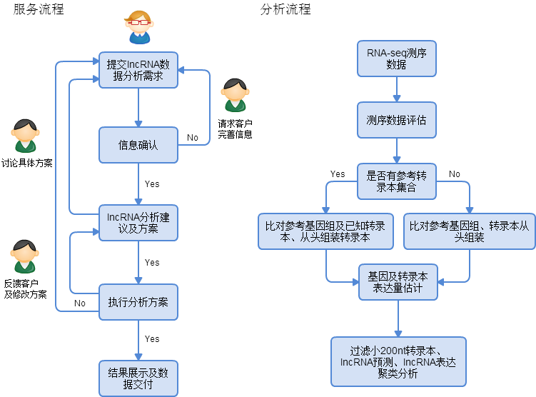

长非编码RNA数据分析
长非编码RNAs（long non-coding RNAs，lncRNAs）是一类长度大于200nt且不编码蛋白质的RNAs（不含rRNA），广泛存在于各种生物体内。lncRNAs参与表观遗传、转录以及转录后等多水平的调控过程，在生命活动中具有重要作用。lncRNA大概可以分成两类，一类是具有poly A尾巴的lncRNA；另一类是没有poly A尾巴的。前者可以通过磁珠吸附的方法可以得到富集，而后者要通过total RNA测序才能捕获到。另外一个难点是，转录本的组装以及如何区分编码蛋白的转录本与非编码的转录本。周易数据分析团队采用合并多个转录组数据的方法，先鉴定lncRNA集合，再利用iSeeRNA程序来鉴定转录本是否编码蛋白质，从而提高预测的准确性。
服务及分析流程

长非编码RNA数据分析需求
- 数据所属样品信息：人肌肉组织、老鼠肝组织、水稻根组织等；
- 样品设计：对照比较策略；
- 测序平台：Solexa, Illumina 2000, Life science 454 FLX, MiSeq 等；
- 数据分析目的：生物学假设，基因寻找等；
- 其它信息，提供详尽的信息有利分析员给出合理有价值的建议。
参考文献：
- Sigova, Alla A., et al. "Divergent transcription of long noncoding RNA/mRNA gene pairs in embryonic stem cells." Proceedings of the National Academy of Sciences 110.8 (2013): 2876-2881.
- Harrow, Jennifer, et al. "GENCODE: The reference human genome annotation for The ENCODE Project." Genome research 22.9 (2012): 1760-1774.
- Guttman, Mitchell, et al. "Ab initio reconstruction of cell type-specific transcriptomes in mouse reveals the conserved multi-exonic structure of lincRNAs." Nature biotechnology 28.5 (2010): 503-510.
周易数据团队所收集的数据集均来自开源公共生物信息数据库。
所有研究材料和技术数据的交流，周易数据团队会严格遵守保密协议，不会向任何第三方透露相关信息。
欢迎客户来电咨询，如有分析需求，请整理RNA-seq数据信息并发送至zyxdata@163.com，我们会尽快回复客户。
注意：测序原始数据，将会在信息确认后，通过其它方法上传。